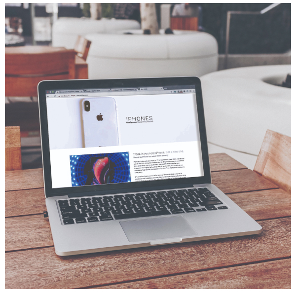
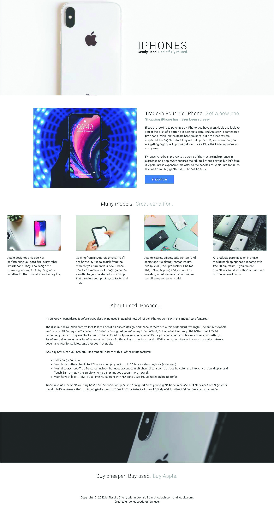

Used iPhones Project
Welcome to one of the first web page I ever made!
Shockingly I don't hate it and actually view it as some of my best work.
Back then, I understood the simple things in life: color theory, white space, and good imagery.
Now I know a lot more and have used more resorces and programs than ever before but this will
forever be my favorite Codesandbox project.
View Codesandbox Page
